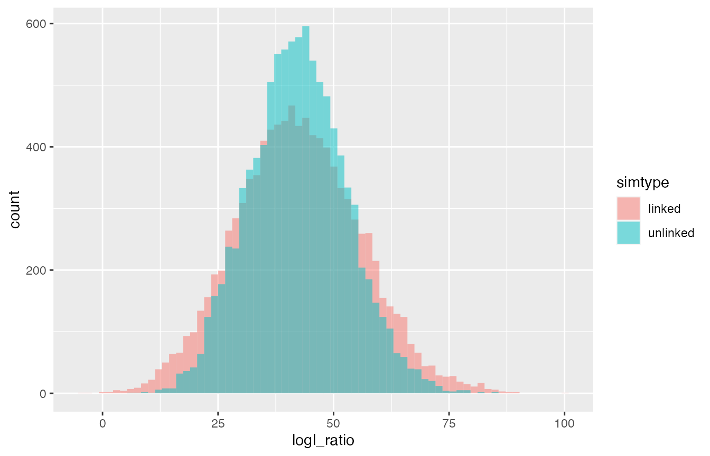

CKMRsim-simulating-linked-markers.Rmd
library(CKMRsim)
library(tidyverse)
#> ── Attaching packages ─────────────────────────────────────── tidyverse 1.3.1 ──
#> ✔ ggplot2 3.3.6 ✔ purrr 0.3.4
#> ✔ tibble 3.1.7 ✔ dplyr 1.0.9
#> ✔ tidyr 1.2.0 ✔ stringr 1.4.0
#> ✔ readr 2.1.2 ✔ forcats 0.5.1
#> ── Conflicts ────────────────────────────────────────── tidyverse_conflicts() ──
#> ✖ dplyr::filter() masks stats::filter()
#> ✖ dplyr::lag() masks stats::lag()In order to pursue simulations in the face of physical linkage, you must download and install the external dependency, Mendel version 16. For Windows and Mac OS X, CKMRsim will look for the Mendel binary in its default install location. So download it from http://software.genetics.ucla.edu/mendel and do a default install. Note that you need to register with your email in order to download Mendel.
‘CKMRsim’ comes with an example data set of linked markers. The data themselves are concocted—they are merely the microhaplotypes that have been assigned some fictitious positions within a genome—but that is useful for demonstration. The data are allele frequencies in the format required by ‘CKMRsim’. Here are the first few lines of them”
linked_mhaps
#> # A tibble: 825 × 7
#> Chrom Locus Pos Allele LocIdx AlleIdx Freq
#> <int> <chr> <dbl> <chr> <int> <int> <dbl>
#> 1 1 tag_id_2255 2778713 AGC 1 1 0.745
#> 2 1 tag_id_2255 2778713 AAC 1 2 0.223
#> 3 1 tag_id_2255 2778713 AGT 1 3 0.0326
#> 4 1 tag_id_1508 10014085 GG 2 1 0.956
#> 5 1 tag_id_1508 10014085 AG 2 2 0.0220
#> 6 1 tag_id_1508 10014085 GA 2 3 0.0220
#> 7 1 tag_id_2513 11890256 CGGAA 3 1 0.621
#> 8 1 tag_id_2513 11890256 CGGAG 3 2 0.121
#> 9 1 tag_id_2513 11890256 CGGGA 3 3 0.0895
#> 10 1 tag_id_2513 11890256 CGGGG 3 4 0.0684
#> # … with 815 more rowsSee that each marker is given a position (in base pairs) along the chromosome upon which it resides.
By default, ‘CKMRsim’ assumes a simple recombination rate of 1 cM per
megabase. If you have an actual genetic linkage map for you markers,
then you can accommodate that by giving base-pair positions
(Pos) of the markers that correspond to the positions that
would yield the observed recombination fractions under a constant rate
of 1 cM/Mb.
Here we will show the process of simulating full sibling pairs with
and without the physical linkage in linked_mhaps. We will
also show that physical linkage does not affect parent-offspring or
unrelated pairs.
Creating the CKMR object is just the same as it was in the “Example 1” vignette.
ck_lmh <- create_ckmr(
D = linked_mhaps,
kappa_matrix = kappas[c("PO", "FS", "U"), ],
ge_mod_assumed = ge_model_TGIE,
ge_mod_true = ge_model_TGIE,
ge_mod_assumed_pars_list = list(epsilon = 0.01),
ge_mod_true_pars_list = list(epsilon = 0.01)
)Simulating the markers under the assumption of no linkage is also the same:
Qs_lmh_no_link <- simulate_Qij(ck_lmh,
calc_relats = c("PO", "FS", "U"),
sim_relats = c("PO", "FS", "U")
)
#> Simulating unlinked markers from Y_l_true matrices for relationship: PO
#> Simulating unlinked markers from Y_l_true matrices for relationship: FS
#> Simulating unlinked markers from Y_l_true matrices for relationship: UIn order to simulate the markers with physical linkage, you use the
same simulate_Qij() function, but you tell it to simulate
with physical linkage and you also have to give it a list of
pedigrees so that it can pass the correct pedigrees to the program
MENDEL, which actually does the simulation. CKMRsim comes
with such a list. At the moment, it only has three entries” “PO”, FS”,
“HS”. If you want to add more (like cousins) feel free. Just note that
the two focal individuals of the pair have to be individuals 1 and
2.
If you need help, ping me at eric.anderson@noaa.gov.
So, simulating with linkage looks like this:
# we only run this if it is on eric's laptop. This way
# we can build the vignette even on CRAN's machines that don't
# have Mendel installed
Qs_lmh_with_link <- simulate_Qij(ck_lmh,
calc_relats = c("PO", "FS", "U"),
sim_relats = c("PO", "FS", "U"),
unlinked = FALSE,
pedigree_list = pedigrees
)Note that CKMRsim is wise enough to simply simulate
markers as unlinked for the PO, U, and MZ cases (because, when dealing
with pairs with those relationships, the presence of physical linkage
makes no difference to the outcome).
Carrying on, it is instructive to look at the distributions of the
FS/U log-likelihood ratios. They should differ between the cases with
and without linkage, most notably the case with linkage should produce
values with greater variance. Let us see if that is the case. To do
that, we extract the log-likelihood ratio values, put them together in a
single data frame, and then plot them. Note that the
extract_logls function returns a column that says whether
the simulation was done with or without linkage, so it is
straightforward to do this in two lines:
lnl_logls <- list(
extract_logls(Qs_lmh_no_link, numer = c(FS = 1), denom = c(U = 1)),
extract_logls(Qs_lmh_with_link, numer = c(FS = 1), denom = c(U = 1))
) %>%
bind_rows()Now compare the cases when the truth is full-sibling:
lnl_logls %>%
filter(true_relat == "FS") %>%
ggplot(aes(x = logl_ratio, fill = simtype)) +
geom_histogram(bins = 70,
position = position_identity(),
alpha = 0.5)
See, logl ratios have the same mean top and bottom.